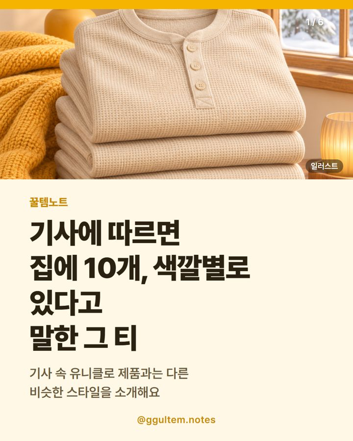

와플 헨리넥 긴팔 고르는 법 — 비슷한 스타일 일루소 소개
2026.11.08 작성 · 2026.11.10 수정 · 꿀템노트
와플 헨리넥은 소재 두께, 핏, 세탁 표기를 먼저 확인하세요. 이 글의 상품은 기사 속 제품이 아닌 비슷한 스타일이에요.

이미지는 이해를 돕기 위한 일러스트이며 실제 상품과 다를 수 있어요.
비슷한 스타일: 아래 상품은 기사 속 제품과 같은 제품이 아니에요.
왜 화제가 됐을까
헤럴드경제 기사에 따르면 헨리넥 티셔츠가 올가을·겨울 대세 아이템으로 떠올랐고, 국내에서는 래퍼 스윙스가 유니클로 와플 헨리넥 티셔츠를 반복해서 입은 것이 계기로 소개됐어요. 기사에는 스윙스가 이 옷을 고른 이유와 함께 집에 10개, 색깔별로 있다고 말했다는 내용이 나와요. 기사가 밝힌 유니클로 제품 가격은 2만9900원(2026.11.06 기사 기준, 변동 가능)이고, 미국 패션 매체들도 헨리넥을 기본 흰 티셔츠 대신 입을 가을 아이템으로 꼽았다고 해요.
이 글에서 소개하는 일루소 제품은 기사 속 유니클로 제품이 아니에요. 비슷한 스타일의 다른 상품이며, 기사 속 인물이 이 상품을 추천하거나 협찬한 것도 아닙니다.
와플 헨리넥 긴팔, 어떻게 고르면 될까?
고르기 전에 확인할 항목을 표로 모았어요.
| 확인 항목 | 어디서 볼까 | 왜 볼까 |
|---|---|---|
| 소재와 두께 | 상품 페이지의 소재·혼용률 표기 | 이너로 입을지 단독으로 입을지에 따라 필요한 두께가 달라요. |
| 핏 | 사이즈표(총장·어깨·가슴 단면) | 기사에서도 단추 디테일과 실루엣을 살리려면 너무 헐렁한 핏은 피하는 편이 좋다고 소개했어요. |
| 세탁 표기 | 세탁 라벨 안내, 구매 후기 | 줄어듦과 보풀 여부를 미리 확인할 수 있어요. |
헨리넥 티셔츠 코디는 어떻게 할까?
헨리넥은 단추가 있는 넥라인이 포인트라 위에 겹쳐 입을 때 목 부분이 보이도록 하는 방식이 흔히 쓰여요. 가디건이나 재킷 안에 레이어드하면 가을·겨울에 활용하기 좋고, 단독으로 입을 때는 와플 짜임의 질감이 드러나요. 실제 어울림은 체형과 취향에 따라 다르니 사이즈표로 여유를 확인하세요.
기사 속 제품과 이 상품은 같은 건가요?
아니에요. 기사에 나온 것은 유니클로 제품이고, 이 글의 일루소 남성용 와플 나그랑 헨리넥 긴팔 티셔츠는 같은 제품이 아니에요. 와플 짜임과 헨리넥 디자인이 비슷한 다른 상품이라는 점을 구매 전에 꼭 알아두세요.
가격·단가 비교
표의 가격은 2026.11.08 기준이며 변동 가능해요. 가격과 재고는 쿠팡 상품 페이지에서 다시 확인하세요.
| 항목 | 이 글의 상품(일루소) | 기사 속 비교 기준 |
|---|---|---|
| 게시일 기준 가격 | 23,800원 (2026.11.08 기준, 변동 가능) | 기사가 밝힌 유니클로 제품 가격 29,900원(2026.11.06 기사 기준 · 변동 가능) |
| 가격 차이 | 기사 기준가보다 6,100원 낮게 표기 | - |
| 상품명 표기 특징 | 남성용, 와플(짜임), 나그랑, 헨리넥, 긴팔 | 와플 헨리넥 티셔츠(기사 소개 기준) |
| 단가 | 수량 1개 상품이라 별도 단가 없음 | - |
두 가격은 조회 시점과 출처가 달라 같은 조건의 비교가 아니에요. 사이즈별 가격 차이는 확인하지 못했으니 상품 페이지에서 보세요. 다른 유형으로는 같은 와플 짜임의 크루넥(둥근 목)형이나 단추 없는 라운드넥 긴팔이 있고, 단추 디테일이 필요 없다면 비교해 볼 수 있어요. 이 글에는 따로 링크를 두지 않았어요.
이런 분께 / 이런 분은 다른 선택
상품명과 표기 사양만 보고 정리했어요. 직접 사용한 경험이 아니며 효과를 보증하지 않아요.
- 이런 분께: 기사에서 본 와플 헨리넥과 비슷한 짜임의 상품을 찾는 분
- 이런 분께: 23,800원 안팎 가격대를 비교하는 분
- 다른 선택: 기사 속 유니클로 제품 그 자체를 원하는 분(이 상품은 다른 제품이에요)
- 다른 선택: 단추 없는 목선이 필요한 분
- 다른 선택: 사이즈표 확인 전에 핏을 정하기 어려운 분
함께 보면 좋은 글: 경량패딩 추천 · 후드 숏패딩 고르는 법 · 털신발 여성 추천 · 슬립온 고르는 법 · 방한커튼 설치 방법 · 고르는 법
비슷한 스타일로 소개하는 상품
일루소 남성용 와플 나그랑 헨리넥 긴팔 티셔츠
상품명에 표기된 특징은 남성용, 와플(짜임), 나그랑, 헨리넥, 긴팔이에요. 성능을 보증하는 내용은 아니에요.
자주 묻는 질문
와플 헨리넥이 뭔가요?
표면에 와플처럼 격자 모양 짜임이 있고 목 아래에 단추가 달린 헨리넥 넥라인의 상의예요. 두께와 소재는 제품마다 다르니 상품 페이지를 확인하세요.
헨리넥 티셔츠 코디는 어떻게 하나요?
가디건이나 재킷 안에 겹쳐 입거나 단독으로 입는 방식이 흔해요. 단추 넥라인이 보이도록 너무 헐렁하지 않은 핏을 고르는 편이 좋다고 기사에서도 소개했어요.
헨리넥 티셔츠 레이어드할 때 주의할 점은?
겹쳐 입으면 목 부분이 두꺼워질 수 있어요. 소재 두께와 사이즈표를 확인하고 겉옷과의 여유를 계산해 보세요.
이 상품은 유니클로 와플 헨리넥과 같은 제품인가요?
아니에요. 기사 속 유니클로 제품이 아닌 비슷한 스타일의 일루소 제품이며, 기사 속 인물이 추천하거나 협찬한 상품도 아니에요.
관련 글
카테고리 모음: 겨울 신발 추천 · 겨울 패션·신발 글 모음